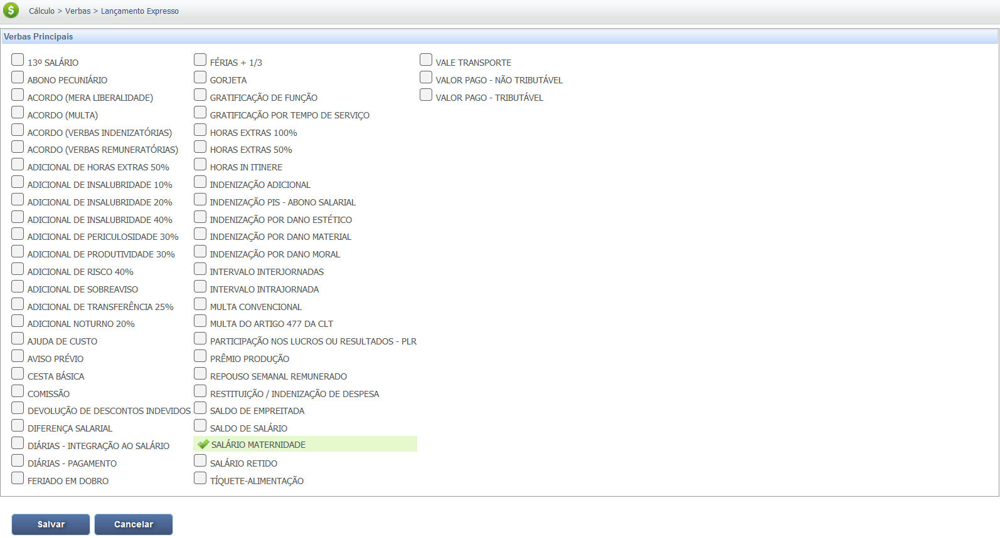
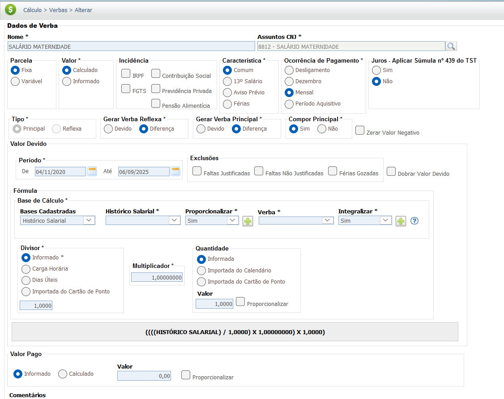
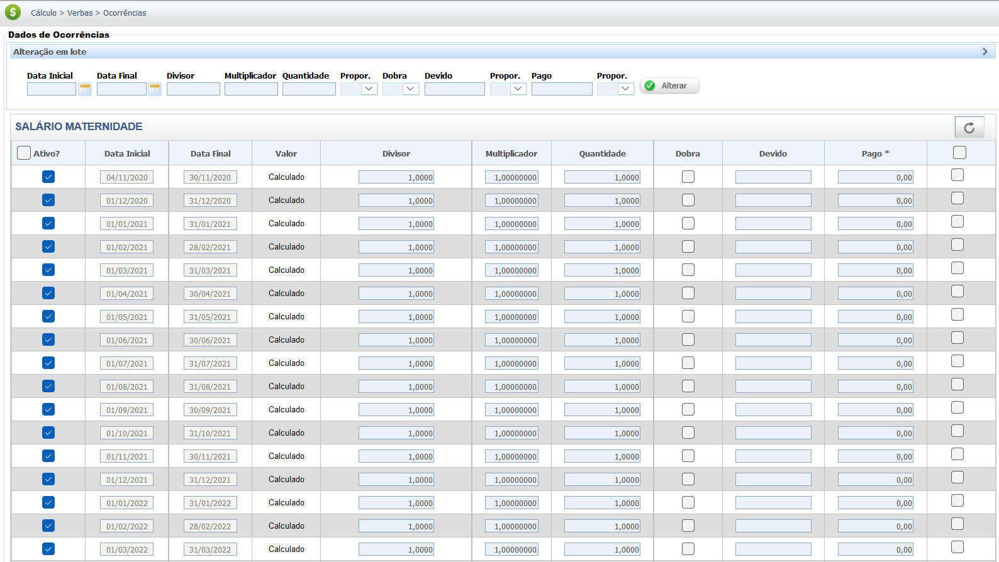

Salário Maternidade
O Salário Maternidade é um benefício previdenciário devido à segurada (ou segurado, em casos específicos) do Regime Geral de Previdência Social (RGPS) que se afasta do trabalho por motivo de nascimento de filho, adoção, guarda judicial para fins de adoção ou aborto não criminoso.
Requisitos e Duração do Benefício
O direito ao benefício depende da qualidade de segurado e, em alguns casos, do cumprimento de carência.
Duração Padrão:
- 120 dias (4 meses), nos casos de parto, adoção ou guarda judicial para fins de adoção.
- 14 dias, no caso de aborto não criminoso ou em caso de natimorto.
Pagamento:
- O empregador (a empresa) realiza o pagamento, mas é reembolsado posteriormente pelo INSS (Instituto Nacional do Seguro Social) através da compensação nas contribuições.
Base Legal e Jurisprudência
O Salário Maternidade possui natureza previdenciária, substituindo a renda da segurada during o período de licença. Por isso, não se integra ao salário de contribuição para fins de INSS ou FGTS (exceto para o recolhimento do FGTS, que é devido pelo empregador).
Fontes Normativas
Lei nº 8.213/91 (Plano de Benefícios da Previdência Social):
-
Artigos 71 a 73-A:
Tratam especificamente da concessão e duração do Salário Maternidade no RGPS.
Consolidação das Leis do Trabalho (CLT):
-
Art. 392 e seguintes:
Definem a licença-maternidade (afastamento do trabalho) e as garantias da empregada gestante.
Jurisprudência
Natureza da Verba
Responsabilidade pelo Pagamento e Natureza Previdenciária:
STF (ADI 2110): Tratou da constitucionalidade da responsabilidade do INSS pelo pagamento do Salário Maternidade (mesmo quando adiantado pela empresa) e sua natureza de benefício previdenciário.
Súmula do TST: Reforça a natureza previdenciária, e não salarial, da verba, influenciando sua não incidência de contribuições (exceto FGTS).
Base de Cálculo e Deduções
Definição da Base de Cálculo
O valor é a remuneração integral do mês do afastamento, que pode ser salário fixo ou a média das 6 (seis) últimas remunerações, se o salário for variável.
Deduções da Base de Cálculo
Deduções Fiscais e Previdenciárias:
O desconto da contribuição para o Instituto Nacional do Seguro Social (INSS) e do Imposto de Renda Retido na Fonte (IRRF) é obrigatório, pois o salário maternidade por ser considerado um rendimento, está sujeito às retenções tributárias.
Deduções/Compensações Possíveis:
-
Descontos referentes a convênios, empréstimos consignados ou pensão alimentícia podem ser mantidos, conforme a legislação e o contrato.
Verbas Reflexas
O período de afastamento do Salário Maternidade é considerado tempo de serviço para diversos fins trabalhistas, servindo como base de cálculo para as verbas a seguir.
| Verba Reflexa | Relação com o Salário Maternidade |
|---|---|
| Férias + 1/3 | O período de licença é considerado tempo de serviço e conta normalmente para o período aquisitivo. |
| 13º Salário | A empregada tem direito ao 13º salário integral, contando o período de licença como tempo de trabalho. |
| FGTS (8%) | O empregador deve continuar recolhendo o FGTS sobre o valor do benefício durante todo o afastamento. |
Atenção: O Salário Maternidade é um benefício previdenciário que substitui a remuneração. Embora não seja "salário" em sentido estrito, a lei garante que ele gere os reflexos mencionados acima para proteger a trabalhadora.
Calculadora (Simulação)
Esta simulação estima o valor total do Salário Maternidade (120 dias) e o valor mensal. Use o salário de contribuição ou a média das últimas 6 remunerações (se variável).
Atenção: Esta é uma simulação simplificada baseada na remuneração integral, aplicável a empregadas. O valor real pode variar dependendo da categoria do segurado (Ex: Contribuinte Individual) e da média de salários de contribuição dos últimos 12 meses.
Lançamento no PJe-Calc
A seguir, confira o passo a passo para o lançamento da verba no PJe-Calc, utilizando a opção "Expresso":
-
Acessar Verbas e Escolher Lançamento: No menu de
navegação à esquerda, clique na opção Verbas para iniciar o lançamento. Após o
comando,
será exibida a tela para escolha do Lançamento da Verba. Escolha a opção Expresso.

- Seleção da Verba: O sistema abrirá as opções de verbas, escolha a verba Salário Maternidade e clique no botão Salvar 
-
Quadro de Verbas e Ações: O sistema exibirá um quadro
com os campos:
- Ações - contendo as opções de configurações da verba selecionada (parâmetros,
ocorrências e
exclusão)

-
- Parâmetros da Verba

-
- Ocorrências da Verba

-
- Excluir

- Verba Principal - verba selecionada para lançamento.
- Verba Reflexa - em que ao clicar no botão Exibir serão listadas todas as verbas reflexas ligadas a Verba Principal.
- Parametrização da Verba: Ao clicar no botão Parâmetros da Verba serão exibidas todas as configurações necessárias para a parametrização da Verba Principal. 
- Registro de Ocorrências: Ao clicar no botão Ocorrências da Verba serão exibidas todas as configurações necessárias para registro das ocorrências da Verba Principal. 